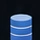
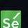
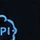
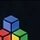
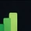
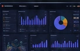
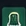
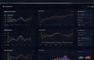
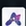

Tools that turn ideas into results.

SQLQueries and ETL
SeleniumAutomation Web
APIs / RESTIntegrations
VBAExcel e Sistemas
Power QueryTransformationReal results. Less manual work. More time for what matters.
Real solutions for real problems. See all projects →
Applymize
AUTOMAÇÃOApplication automation platform with AI, integrating data, processes and result analysis.
 View project →
View project →
SellerOS
DASHBOARDSManagement system and dashboards for sellers, with data automation and real-time reporting.

View project →
Lumyra
DADOSData pipelines and dashboards for performance analysis focused on strategic insights.

View project →
Meu Carro Vale
SYSTEMSVehicle valuation platform with automation, integrations and market analysis.
Vinance
FINANCEPersonal finance system with automation, dashboards and spending analysis.
 View project →
View project →
Football Decision Lab
MACHINE LEARNINGData analysis and predictive models applied to football.
 View project →
View project →
Let’s build something remarkable together.
New challenges, partnerships and opportunities are always welcome.
“Great results
are built as a team.”